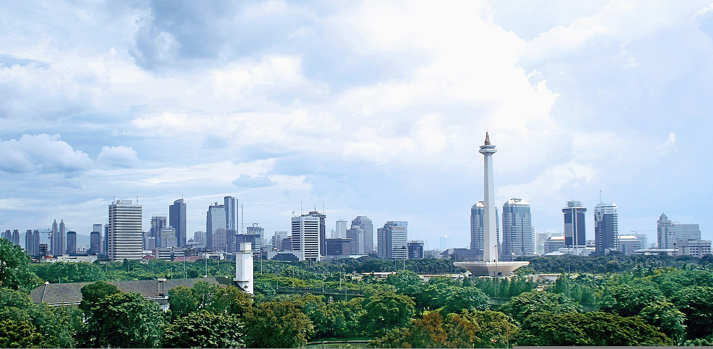
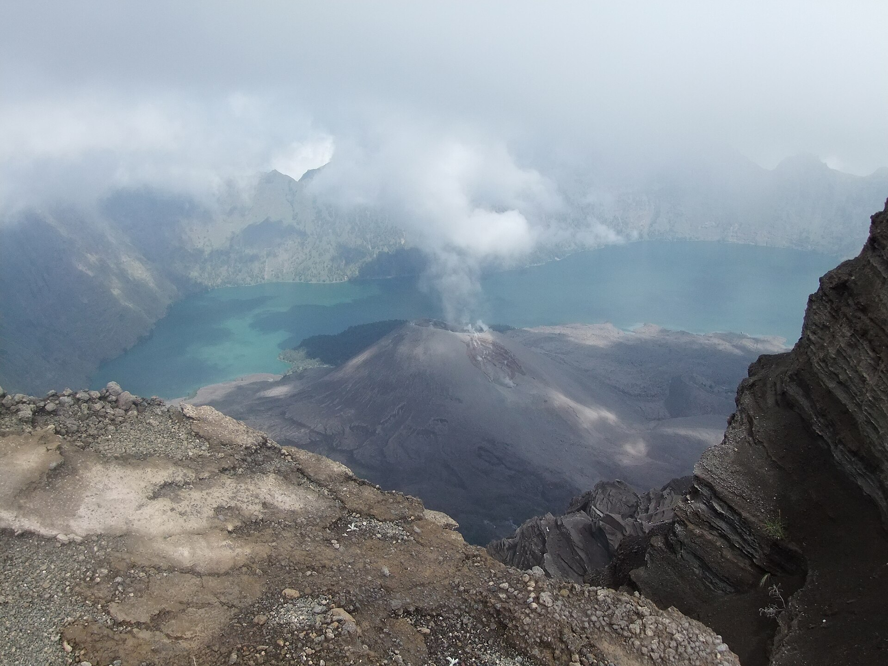
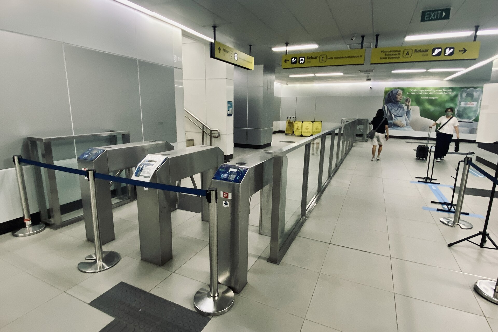
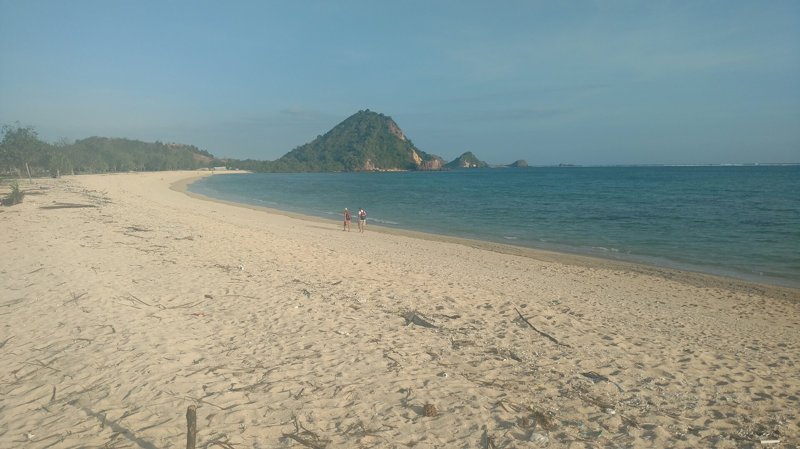
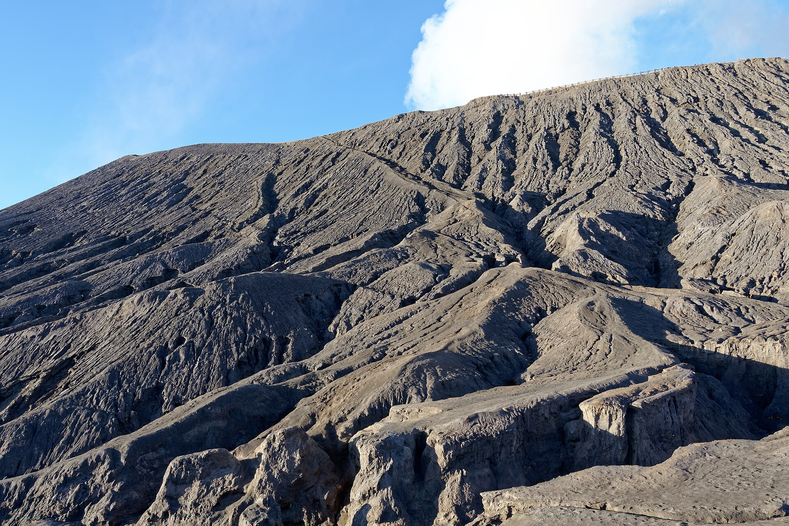
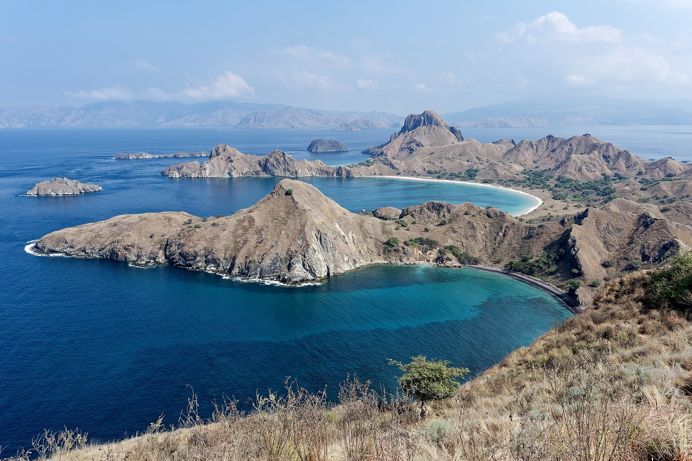
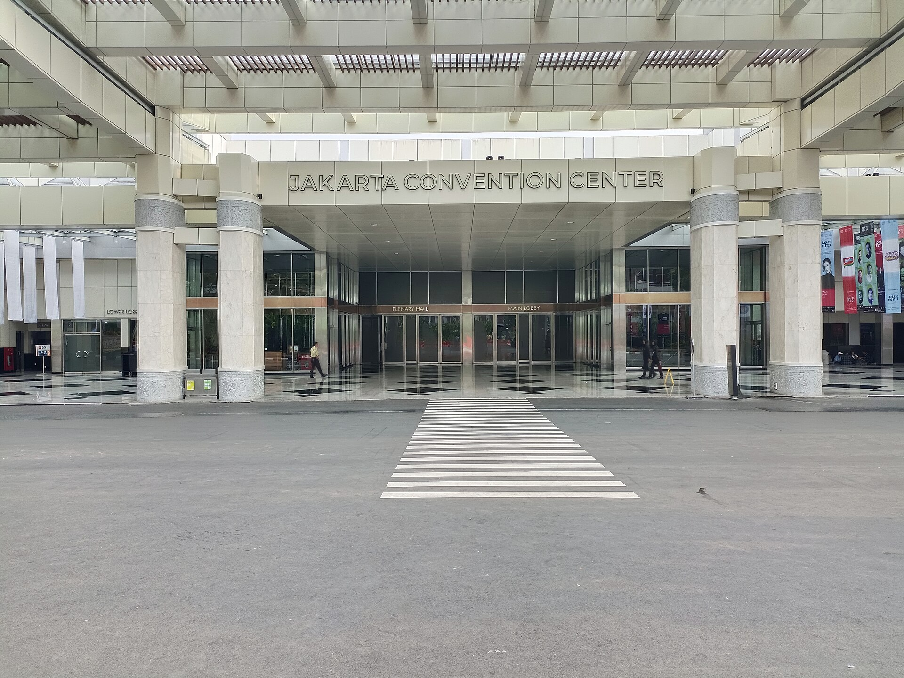

PRESET 01 // LOCAL DESTINATION
PRESET 01 // LOCAL DESTINATION
Jelajah Lombok
Pakar wisata regional, pantai pasir merica, trekking Rinjani, dan tenun tradisional Sasak Sade.
 PRESET 02 // LUXURY BESPOKE
PRESET 02 // LUXURY BESPOKE
Aurelia Private Journeys
Layanan concierge privat, vila ultra-mewah, yacht charter pribadi, dan pengalaman terkurasi personal.

PRESET 03 // GLOBAL CONTEMPORARYAtlasway Travel
Pengalaman digital modern dengan card grid bersih, inventori global, dan antarmuka ramah pengguna.
 PRESET 04 // CULTURE & HERITAGE
PRESET 04 // CULTURE & HERITAGE
Akar Budaya Travel
Eksplorasi cagar budaya, candi nusantara, workshop kerajinan tradisional, dan narasi dokumenter.

PRESET 05 // ADVENTURE & NATURERimba Trek Adventures
Pendakian gunung api aktif, simaksi resmi, ekspedisi karst, dan eco-lodge terhubung langsung.
 PRESET 06 // FAMILY & GROUP
PRESET 06 // FAMILY & GROUP
TemanTrip Holidays
Kamar terhubung (connecting rooms), vila keluarga dengan pagar kolam renang, dan sewa van privat rombongan.
 PRESET 07 // WELLNESS & SLOW LIVING
PRESET 07 // WELLNESS & SLOW LIVING
Sela Retreats
Suaka hening, penginapan tepi lembah sungai, sesi mindful walking senja, dan santapan pangan lokal alami.

PRESET 08 // URBAN & BUSINESSMetroLink Travel
Hotel koridor MRT & CBD Sudirman, akses ruang pertemuan konferensi JCC, dan integrasi invoice perusahaan.

PRESET 09 // COASTAL & ISLANDNusa Tide Escapes
Bungalow beratap alang-alang di bibir pantai, charter perahu cadik Gili, dan spot snorkeling penyu laut.

PRESET 10 // BUDGET & BACKPACKERJalan Hemat Travel
Slot open trip berbagi biaya jeep Bromo, kapsul hostel ber-AC bersih, dan harga jujur tanpa biaya tersembunyi.
AGENCY SLICE // EDITORIAL
Bloosm Travel
Konsep editorial travel kontemporer dengan grid berani, micro-interactions elegan, dan kurasi gaya hidup.
AGENCY SLICE // BALI & BEYOND
Melali Bali & Beyond
Sentuhan budaya autentik Bali, kurasi pengalaman spiritual terpandu, dan perjalanan pesisir Nusa Tenggara.
 AGENCY SLICE // ACCESSIBILITY
AGENCY SLICE // ACCESSIBILITY
Travel4All
Fokus wisata inklusif, ramah kursi roda, kenyamanan lansia, fasilitas bayi, dan transparansi aksesibilitas.
FOUNDATIONAL // LUXURY
Bagus Travel
Private journeys berstandar premium dengan kurasi vila eksklusif Tanah Lot, Borobudur, dan Danau Toba.
Mandalika Escape
Eksplorasi keindahan pesisir Lombok Selatan, sirkuit Mandalika, desa tenun Sasak, dan Gili Island hopping.

FOUNDATIONAL // ADVENTUREKhatulistiwa Explorer
Jelajah garis khatulistiwa: savana Padar, kadal purba Komodo, api biru Ijen, dan gugusan karst Raja Ampat.

FOUNDATIONAL // BUSINESSNusantara Executive
Solusi akomodasi korporat Sudirman CBD, delegasi pameran JCC, dan fasilitas transit efisien terstandar.
 FOUNDATIONAL // HERITAGE & UMRAH
FOUNDATIONAL // HERITAGE & UMRAH
Serenity Umrah Privilege
Layanan perjalanan ibadah umrah eksklusif, tur napak tilas sejarah Islam nusantara, dan ketenangan jiwa.